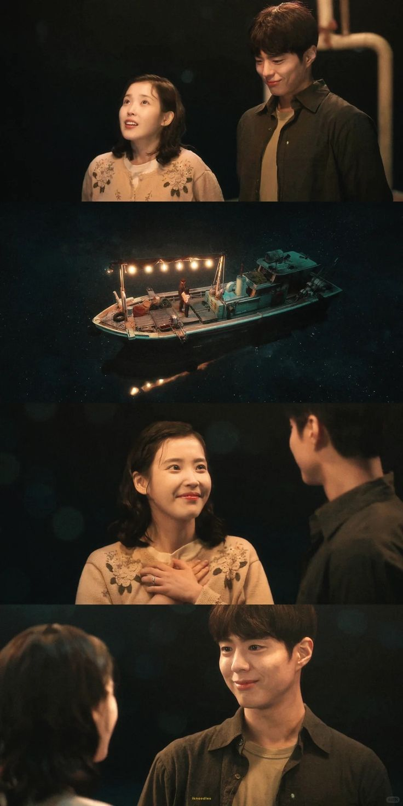

🍊When Life Gives You Tangerines🍊

This captivating K-drama is set on the beautiful Jeju Island, following Ae-sun (IU), a spirited woman with a mysterious and difficult past. As she navigates her troubled history, she finds love and discovers her inner strength alongside Gyeol (Park Bo-gum), her devoted friend. Their relationship blossoms into romance against the stunning backdrop of Jeju's lush forests, but they must overcome significant societal obstacles and complex family dynamics. Throughout their journey, hidden truths about Ae-sun's life gradually come to light, adding depth to the narrative. The series beautifully incorporates Jeju's rich cultural heritage, creating an authentic and immersive viewing experience. This heartfelt drama received widespread critical acclaim and won multiple prestigious awards in 2025 for its emotionally resonant storytelling.
🍊My images🍊

- In this K-drama scene, Gyeol's mother slaps Ae-sun for refusing to let their daughter Geum Myeong become a Haenyeo (traditional female diver), a decision rooted in Ae-sun's trauma after her own mother died while working as a Haenyeo and made her promise never to follow that path. Witnessing this violent confrontation, Gyeol immediately decides to move his wife and daughter to a new home despite the financial burden, prioritizing his family's safety and well-being over his mother's expectations.

- In this scene, After Gyeol fulfilled his dream of purchasing a boat to become an independent fisherman and provide for his family, Gyeol shares this milestone with his beloved wife Ae-sun and their three children—daughter Geum Myeong and sons Eun Myeong and Dong Myeong. When Ae-sun steps onto the boat, defying the outdated beliefs from her upbringing that deemed women unworthy of such spaces, her devoted husband gently reshapes her perspective, affirming through this profound moment that women are equal and capable.
.jpg)
- In this scene, Gyeol wearily headed to his boat at dawn, burdened by exhaustion, he glanced back to see his wife and daughter lovingly sending him off. Their smiles reminded him that his tireless work was for their happiness and security, fueling his resolve to labor on, no matter the cost to himself.